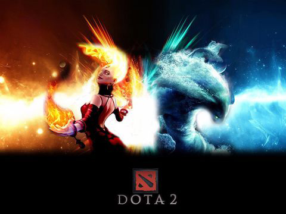

Dota2
混元初开，天地未分之际，初生的世界就迎来了一个诡异的伴星一颗如同水晶般透明的星球，被后人称为“癫狂之月”。这颗看上去很小的星球蕴含着狂暴的光芒力量，目睹这力量的人让人感觉似乎是亲眼见证了神的交战。它发出的光芒如此之强，以至于白昼时候的阳光也要逊色三分.
而癫狂之月并非一颗安分稳定的星球。与其说他是一个星球，不如说是一个囚牢。里面囚禁着两个争斗了千万年的远古智慧，创世者厌倦了他这俩个子民无休止的争斗，于是降下天罚，把这两个远古智慧关押在一个异能水晶所制成的球体内，让他们永世争斗，永世坠落。这个不详的囚笼在空间中漂浮了无数个世纪，最后，被我们这个可怜的世界的引力所捕获。
在癫狂之月的照耀下，原始的社会文明时代更迭，而无数的哲人和智者也毕生注视着这一奇怪的星体，用自己的想象力和有限的认知能力来解释这一现象。而在同时，天体间的轨道应力和潮汐力带来的裂隙，也让癫狂之月的囚犯们开始密谋逃离，一开始那些裂隙还只是细微的，然而随着里面的力量不停的冲撞，裂隙开始蔓延，从最细微的裂痕，演变成了成千上万道庞大的沟壑，并不时因为里面的能量而发出妖艳的红光。
此处显示 class "d" 的内容 
终于，在被称为“殇月之夜”的晚上，癫狂之月分崩离析。绝大多数形体碎片散入空间中，燃烧殆尽。然而，还是有一些碎片降落在地上，有的熔化了，有的虽然破碎了，但是保留了最初的晶体状。碎片安静的在地上躺着。岁月变迁，终于，大地从灭顶之灾中缓慢的恢复，而这次史前大灾难的幸存者们也逐渐的生息繁衍，传承文明。到后来，癫狂之月已经逐渐成为了一个遥不可及的幻梦，而殇月之夜，也成为了一个传说。
陨落的远古物质碎片在落地以后，逐渐恢复了其最原始的本源力量：天辉和夜魇。由于纯净的力量无比强大，两种碎片释放出的能量也是独特且巨大的。而那些在碎片周围定居的人们则逐渐的开始吸取这两种力量，先是为己所用，可是到了后来，他们已经离不开这种天赐之力了。更为讽刺的是，他们在碎片四周修了神龛，并称其为 “远古遗迹”，作为神灵，世代敬畏和膜拜。
不过事实上，不管是天辉还是夜魇的远古遗迹，都给周围的居民带来了极大的好处：动力、魔法、庇护。甚至是让他们复活。然而遗迹散发出的能量也彻底的改变了周围的环境。在天辉遗迹周围，一切都是明亮和多彩的，散发著光辉和魅力。而在夜魇遗迹周围，由于其邪恶的能量辐射，周围的环境都渗透着毒素和腐烂气息。俩种力量分属俩个极端，他们既完美的互补，又彻底的相悖，他们间的矛盾永远不可调和。
随着两个遗迹文明的发展，他们终于开始了争斗。遗迹之间的能量冲突是战争的导火索，因为一方出现，另一方的遗迹能量就会相应的颓落。只有彻底摧毁掉一个遗迹，另一个的力量才会完全的恢复。因此，被遗迹能量所奴役的生物们。开始了无休止的战斗，保卫自己的遗迹，摧毁对方的遗迹。大陆上的英雄们也听到了这一战争的呼唤，加入其中，然而他们没有意识到。俩个阵营的目的和手段，其实都是一样的。 从被创世者放逐以来，俩个远古遗迹能量都耐心的等待着重起战争，无休止的战争。毫无疑问，随着大陆上的英雄们陆续的加入到两方阵营，一场旷世之战即将开始。